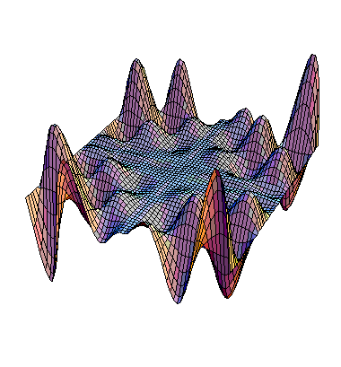

| The fitness landscape is a graphical representation of a map from genotype space into fitness. |
| Thinking of the genotype space as a two-dimensional region, the fitness landscape may look like a mountain range above this region. |
|  |
| The linear appropach to finding the most fit solution is to move in genotype space in the direction of most increasing fitness, changing one gene at a time. |
| This will give a local maximum of fitness, but maybe not the global maximum. |
| Because crossover allows large excursions in genotype space, it avoids this local max trap. |
Return to Genetic Algorithms and Artificial Evolution.